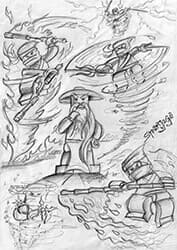

Historia

En 2009, un grupo de jóvenes diseñadores tenía la misión de crear una nueva línea de juguetes. Con un público objetivo de niños entre los 7 y 9 años, debían desarrollar una idea que logre cautivar incluso a nuevos constructores al mundo LEGO.
El equipo se inspiró en el Japón medieval y las leyendas del maestro de las artes marciales, el indescifrable ninja. Por siglos, un aura misteriosa y mágica rodeó el concepto de ninja, quien podía trepar las paredes más empinadas y correr a través de los pasillos más angostos. Jóvenes y adultos siempre amaron este tipo de historias y sus personajes
Así, en 2009, un viernes por la tarde, el Concept Developer boceteó las primeras ideas. 18 meses más tarde, la línea de LEGO Ninjago es lanzada y nos presenta a 5 jóvenes a quienes seguimos a través de su entrenamiento en el Spinjitsu. Los vemos crecer de niños a adultos. Vemos su sufrimiento mientras buscan sus orígenes. Los vemos alcanzar su máximo potencial cuando vencen a los villanos.
Premisa
Mucho antes de que el tiempo tuviera un nombre, el reino de Ninjago fue creado por el Primer Maestro del Spinjitzu, usando las cuatro armas doradas. Cuando falleció, sus dos hijos juraron proteger la tierra y las armas sagradas. Sin embargo, el mayor, Garmadon, sucumbió a la oscuridad dentro de él cuando luchó contra su hermano, Wu, en un intento de robar las armas para sí mismo, obligando al más joven a atacarlo y arrojarlo al Inframundo. A raíz del descenso de su hermano, Wu escondió las armas y le dio el mapa a un viejo amigo herrero para que lo escondiera. Con las armas a salvo por fin, Wu juró reclutar a la próxima generación de luchadores elementales. Años más tarde, el hijo del herrero, Kai, está en una misión para salvar a su hermana de las fuerzas no muertas Skulkin de Lord Garmadon, y es reclutado por Sensei Wu junto con otros tres adolescentes para manejar las Armas Doradas y defender al mundo del mal.